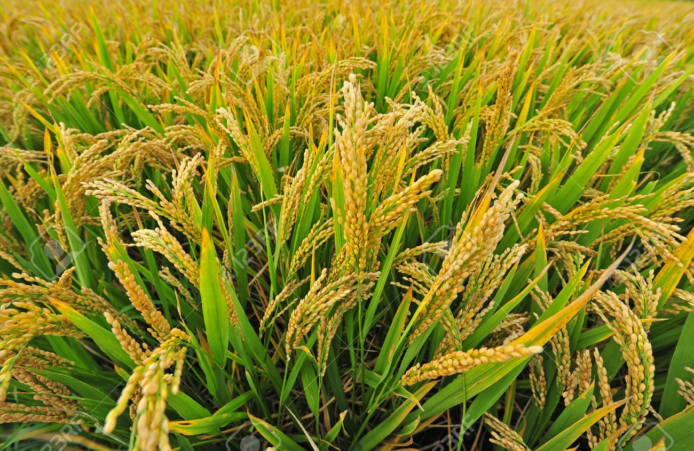

Rice Production
General Info :
Rice is the most important food crop of India covering about one-fourth of the total cropped area and providing food to about half of the Indian population. Punjab has made tremendous progress in rice productivity and production during the past 45 years. Due to use of high yielding varieties and new technology Punjab has given the title of "Rice Bowl of India".
SOIL :
It can be grown on a variety of soils with low permeability and pH varying from 5.0 to 9.5. Sandy loam to loamy sand to silty loam to clay loams, silty to clayey loam soils with low permeability, free of water logging and sodicity are considered best for paddy cultivation.
POPULAR VARIETIES WITH THEIR YIELD :
Hybrid 6201: Suitable for irrigated areas. It give resistance to blast. It gives average yield of 25 qtl/acre. Vivek Dhan 62: Suitable for hilly and irrigated areas. Its grains are short bold. It gives resistant to blast. Neck blast and it can survive in low temperature areas. It give average yield of 19 qtl/acre. Karnataka Rice Hybrid 2: Suitable for irrigated and timely sown areas. It is tolerant to leaf blight and other disease. It gives average yield of 35 qtl/acre. Ratnagiri 1 and 2: Ratnagiri one suitable for irrigated areas while Ratnagiri 2 suitable for low land areas. These are semi dwarf varieties and give average yield of 19 qtl/acre and 21 qtl/acre respectively. Punjab Basmati 5: It is also a high yielding variety which gives an average yield of 15qtls/acre. The variety gets mature within 137 days after transplanting. Pusa Punjab Basmati 1509: Early maturing variety i.e ready to harvest in 120 days. It is susceptible to bacterial blight. Its grains extra long, slender and possess excellent cooking quality. It is suitable for multiple cropping pattern. It gives average yield of 15.7 qtl/acre.
LAND PREPARATION :
After harvesting of wheat grow dhaincha (seed rate 20 kg/acre) or sunhemp @ 20 kg/acre or cowpea @ 12 kg/acre up to first week of May. When crop is of 6-8 week old, bury them into the soil one day before transplanting of paddy. It will save 25 kg of N per acre. Use laser land leveler for land levelling. After then puddle soil and to obtained fine well levelled puddle field to reduce water loss through percolation.
SEED :
Seed Rate: For direct sowing or broad casting use seed rate of 7-8kg/acre and for dibbling use seed rate of 7-9 kg/acre. For wet bed and dry bed paddy nursery, 10-12 kg seeds for 500 square metre nursery area is sufficient for transplanting one acre of main field. Where as in modified dapog method use seed rate of 10-15 kg for 100m2 nursery area for transplanting one acre land.
Seed treatment: Before sowing, soak them in 10 Ltr water containing, Carbendazim@20gm+ Streptocycline@1gm for 8 to 10 hour before sowing. After then dry seeds in shade. And then use for sowing.Also you can use below mention fungicides to protect crop from root rot disease. Use chemical fungicides first then treat seed with Trichoderma.
| Fungicide/Insecticide Name | Quantity (Dosage) Per Kg Seed |
| Trichoderma | 5-10 gm |
| Chlorpyriphos | 5 ml |
SOWING :
Time of sowing: Nursery Preparation: 15th to 30th May is the optimum time for nursery preparation. Spacing: For normal sown crop a spacing of 20 - 22.5 cm between rows is recommended. When sowing is delayed a closer spacing of 15-18 cm should be adopted. Method of sowing: Broadcasting method Sowing depth: The seedlings should be transplanted at 2 to 3 cm depth. Shallow planting gives better yields.
NURSERY MANAGEMENT AND TRANSPLANTING :
sBefore sowing, soak them in 10 Ltr water containing, Carbendazim@20gm+ Streptocycline@1gm for 8 to 10 hour before sowing. After then dry seeds in shade. And then use for sowing.
Nursery Preparation: 15th to 30th May is the optimum time for nursery preparation. Wet bed nursery: It is done in region having adequate water availability. Nursery area is about 1/10 of the area to be transplanted. Broadcast Pre-germinated seeds on puddled and levelled soil. Keep the beds moist for the first few days. Do not flood the beds. When the seedlings are about 2 cm high, keep the beds submerged in a shallow layer of water. Apply dose of 26 kg/acre Urea about a fortnight after sowing. For transplantation use seedlings of 15-21 days or when seedlings are 25-30 cm long. Regularly irrigated the nursery. Dry Bed: It is prepared in dry soil condition. Total seed bed area is about 1/10 of the area to be transplanted. Make seed bed of convenient dimensions with the soil raised at height of 6-10 cm. Spread half burned rice husk on these beds for easy uprooting. Irrigation should be done properly because less moisture can damage seedling. Incorporate basal fertilizer for proper nutrients. Modified Mat nursery: This is the modified method of nursery making which require less space and less quantity of seeds. It can be cultivated at any place having flat surface and assured water supply. The area needed is about 1% of the transplantable land. Establishing seedlings in 4 cm layer of soil mix, arranged on a firm surface. Make 1 meter wide and 20-30 meter long plot and spread plastic sheet or banana leaves on it. Place a wooden frame with 4 cm deep and then fill the frame with soil mixture. Sow pre-germinated seed in it and cover the seed with dry soil. Immediately sprinkle water on it. Irrigate frame as and when needed and keep it moist. Seedlings are ready for transplanting within 11 to 14 days of sowing. Transport seedling mat to field and separate them and transplant 1-2 seedlings at 20x20 cm or 25x25 cm spacing. Depth of planting: The seedlings should be transplanted at 2 to 3 cm depth. Shallow planting gives better yields. Method of Transplanting : 1) Flat puddled transplanting: Transplant seedlings in line at 20x15 cm for normal and 15x15 cm for late transplanting. Put 2 seedlings per hill and the seedlings should be transplanted upright and about 2-3 cm deep. 2) Bed Transplanting: Transplant seedlings on middle of slopes of bed. These bed are prepared by wheat bed planter in heavy soil. Before transplanting irrigate the furrows, then transplant seedlings by maintaining a plant to plant distance of 9 cm. 3) Mechanical transplanting: For transplanting Mat type nursery, mechanical transplanter are used. It transplant seedlings at spacing of 30x12 cm.FERTILIZER :
Fertilizer Requirement (kg/acre):| UREA | DAP or SSP | MOP | ZINC |
| 110 | 27/75 | 20 | - |
| NITROGEN | PHOSPHORUS | POTASH |
| 50 | 12 | 12 |
For paddy apply N:P:K@50:12:12 kg/acre in form of Urea @110 kg/acre, SSP@75 kg/acre and MOP@20 kg/acre. Before fertilizer application, carried out soil test and apply fertilizer on the basis of soil test result. Apply P and K dose if soil test show deficiency of it. If DAP is to be used, apply Urea@100 kg/acre, DAP@27 kg/acre and MOP@20 kg/acre. Apply 1/3rd dose of Nitrogen and whole dose of P and K before last puddling. Apply second dose three week after transplanting and three weeks after 2nd dose, apply remaining dose of Nitrogen. Use neem coated Urea as it will increased uptake of N. Apply Zinc sulphate heptahydrate@25 kg or zinc sulphate monohydrate@16 kg/acre at puddling to overcome zinc deficiency. Due to water scarcity, young leaves give yellow or yellow white appearance about three week after transplanting. Apply irrigation immediately also spray with ferrous sulphate@1 kg/100 ltr water per acre, two-three time with weekly intervals.
WEED CONTROL :
Use Butachlor 50 EC @ 1200 ml/acre or Thiobencarb 50 EC @ 1200 ml or Pendimethalin 30 EC @ 1000 ml or Pretilachlor 50 EC @ 600 ml per acre as pre-emergence herbicides, 2 to 3 days after transplanting. Mix any one of these herbicides in 60 kg of sand per acre and broadcast uniformly in 4-5 cm deep standing water. For broadleaf weed control, apply Metsulfuron 20 WP @ 30 gm/acre in 150 Ltr water as post emergence, 20-25 days after transplanting. Before spray, drained out the standing water from the field and apply irrigation one day after spray.
IRRIGATION :
Keep field flooded up to two weeks after transplanting. When all water gets infiltrated two day after apply irrigation in field. Depth of standing water should not exceed 10 cm. While doing intercultural and weeding operation, drain out excess water from field and irrigate field after completion of this operations. Stop irrigation about a fortnight before maturity to facilitate easy harvesting.
WEED CONTROL :
Reap the yield once the panicles are developing fully as well as the crops get changed significantly yellow. The yield is generally harvested manually by sickles or by blend harvester. The harvested crops, tied up into compact bundles, strike it against really hard surface to split the grains from straw, accompanied by winnowing.